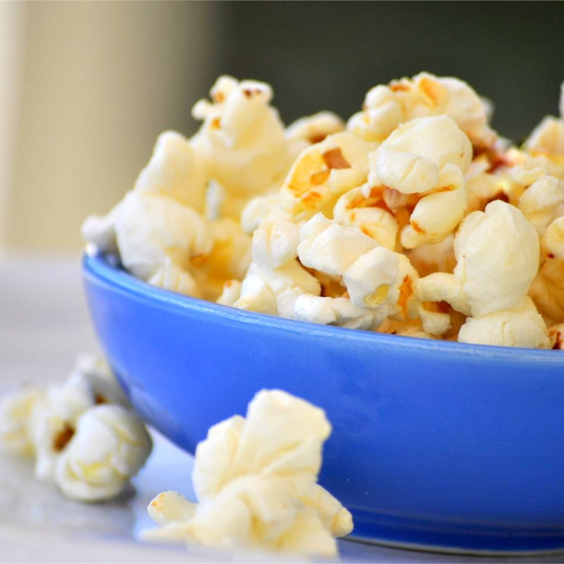

Kettle Corn
Description
Kettle corn is an old-fashioned, county fair treat. Your family will never want plain popcorn again! If you use white sugar, it will taste like popcorn balls; if you use brown sugar, it will taste like caramel corn.
Ingredients
- ¼ cup vegetable oil
- ½ cup unpopped popcorn kernels
- ¼ cup white sugar
Directions
- Heat vegetable oil in a large pot over medium heat. Stir in popcorn kernels and sugar.
- Cover and shake the pot constantly to prevent sugar from burning. When popping has slowed to once every 2 to 3 seconds, remove the pot from the heat and shake for a few minutes until popping stops.
- Pour popcorn into a large bowl and allow to cool, stirring occasionally to break up large clumps.
Nutrition Facts
Per Serving: 4 209 calories; protein 2.4g; carbohydrates 24.8g; fat 11.9g; sodium 0.6mg.
Back to Home